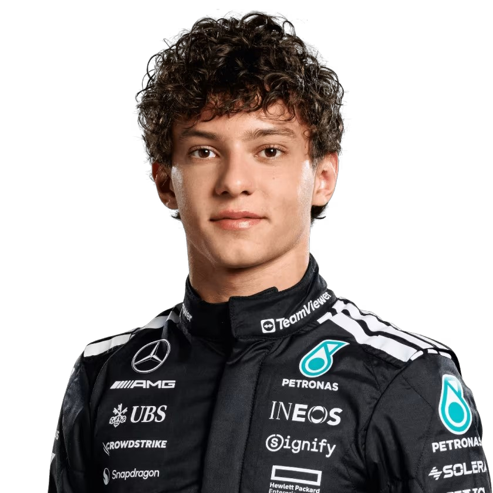
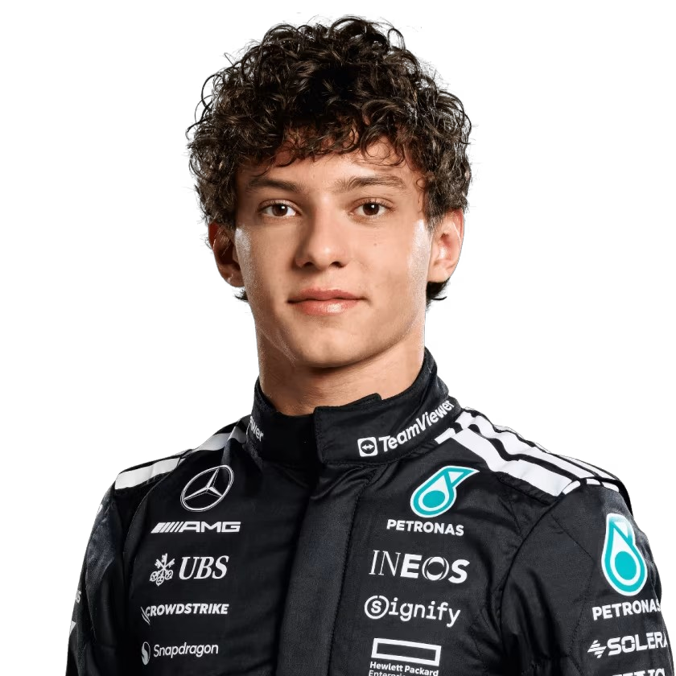

Mercedes F1
Mercedes-Benz ha tenido una presencia rica y significativa en la Fórmula 1, marcada por dos eras distintas de dominio.
Los Primeros Años: Las "Flechas Plateadas" Originales (1950s)
La incursión inicial de Mercedes en la Fórmula 1 fue en la década de 1950, tras el establecimiento del Campeonato Mundial de Pilotos en 1950. Las famosas "Flechas Plateadas" (Mercedes-Benz W196) dominaron la escena. Equipados con tecnología innovadora para la época, como la inyección directa de combustible, y pilotados por el legendario Juan Manuel Fangio, Mercedes ganó los campeonatos de pilotos en 1954 y 1955. Fangio, considerado uno de los más grandes de todos los tiempos, aseguró sus títulos con la marca alemana.
Sin embargo, tras el trágico accidente en las 24 Horas de Le Mans de 1955, donde un coche Mercedes estuvo involucrado en un incidente que cobró la vida de más de 80 espectadores, la compañía se retiró de todas las competiciones automovilísticas, incluyendo la Fórmula 1, hasta nuevo aviso.
El Regreso y la Era de Dominio Absoluto (2010 - Actualidad)
Mercedes-Benz regresó a la Fórmula 1 como equipo de fábrica en 2010, tras adquirir el equipo Brawn GP, que había ganado el campeonato en 2009. Este retorno marcó el inicio de una nueva era para la escudería. Los primeros años fueron de construcción, con pilotos como Michael Schumacher y Nico Rosberg, preparando el terreno para lo que vendría.
El verdadero punto de inflexión llegó en 2014 con la introducción de la nueva reglamentación de motores híbridos V6 turbo. Mercedes logró una ventaja tecnológica impresionante que los catapultó a una era de dominio sin precedentes. Bajo el liderazgo de Toto Wolff y con la formidable dupla de pilotos Lewis Hamilton y Nico Rosberg, el equipo se convirtió en la fuerza dominante de la F1.
Durante este periodo, Mercedes consiguió:
8 Campeonatos Mundiales de Constructores consecutivos (de 2014 a 2021), un récord absoluto en la historia de la F1.
7 Campeonatos Mundiales de Pilotos (6 con Lewis Hamilton y 1 con Nico Rosberg). Lewis Hamilton se convirtió en uno de los pilotos más exitosos de todos los tiempos con Mercedes, igualando el récord de Michael Schumacher de 7 títulos mundiales en total.
La superioridad de Mercedes en esta era fue tal que se ganaron la mayoría de las carreras disputadas y rompieron numerosos récords. El rendimiento de sus unidades de potencia no solo benefició a su equipo de fábrica, sino también a sus clientes.
Desde 2022, con los cambios en la reglamentación aerodinámica, Mercedes ha enfrentado nuevos desafíos, adaptándose a la nueva era con George Russell como compañero de equipo de Lewis Hamilton. A pesar de ya no tener el dominio absoluto, siguen siendo un competidor de primer nivel en la búsqueda de más victorias y campeonatos.
- País: Reino Unido
- Base: Brackley y Brixworth, Reino Unido
- Debut: 1950


 
